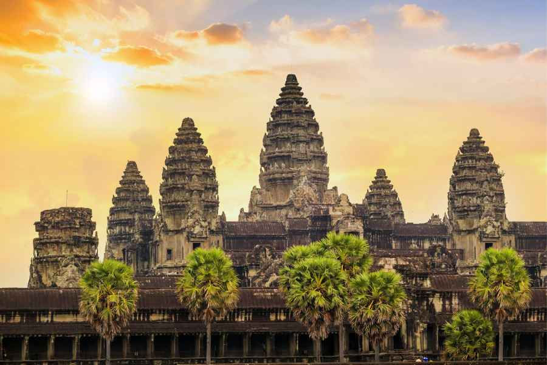

Kingdom of Cambodia


About Angkor wat
Angkor Wat is an enormous Buddhist temple complex located in northern Cambodia. It was originally built in the first half of the 12th century as a Hindu temple. Spread across more than 400 acres, Angkor Wat is said to be the largest religious monument in the world. Its name, which translates to “temple city” in the Khmer language of the region, references the fact it was built by Emperor Suryavarman II, who ruled the region from 1113 to 1150, as the state temple and political center of his empire.